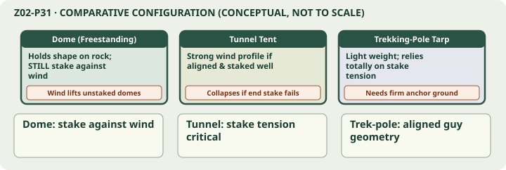

Z02-P31 · Shelter and housing · New manuscript
Compare freestanding dome, tunnel and trekking-pole tent geometries
Understand how pole architecture and stake dependence affect setup, stability and weather limits across manufactured tents.
When it applies · Selecting or pitching commercial tents across forest sites, rocky pads and windy open terrain.
Equipment · Complete tent body, rainfly, matching poles, full stake set and manufacturer pitch instructions.

Actions
- Recognize that freestanding dome tents hold basic shape without stakes for positioning on rock or hard pads, yet still MUST be staked and guyed against wind lift.[E20, E16, ED]
- Recognize that tunnel and non-freestanding trekking-pole tents rely completely on opposing stake tension and guyline alignment to stand; one failed end stake can flatten the whole frame.[E20, E16, ED]
- Follow the manufacturer's exact pole-sleeve, clip and guy-out sequence rather than substituting missing poles or skipping guy points in breezy weather.[E20, E16]
Failure recognition · Leaving a freestanding dome tent unstaked while stepping away, letting a sudden gust tumble or tear the shelter across camp.[E16, E20]
Verify · Confirm all pole tips seat fully in grommets, guylines tension evenly per instructions and the shelter stays firmly anchored when tested gently by hand.[E20, E16, ED]
Stop or change course · Do not use a three-season geometry in severe storms, heavy wet snow or high winds outside its manufacturer limits; relocate to substantial shelter.[E16, E17, E20]
Evidence and editorial notes
- E16 · NWS · Wind Safety (current web edition)
- Section: Wind Safety > High Wind Hazards · Conditions: Forecast or developing high winds, squalls, or straight-line winds
Support: High winds topple trees, loft debris, and stress lightweight shelters beyond fabric and anchor limits; relocate out of timbered fall zones and into substantial shelter before gusts peak.
Limitations: Tents and tarps lack standardized wind-speed survival guarantees across soil types and pitch angles. · Conflicting evidence: None; avoids unvalidated mph ratings for improvised pitches.
Editorial note: Drives high-wind shelter inspection, guying limits, and abandonment thresholds. · Specialist reviewer: Weather safety and shelter equipment
Primary source · checked 2026-11-24 - E17 · National Weather Service · Tornado Safety: During a Tornado (Current web edition)
- Section: During a Tornado: home, outside, vehicle · Conditions: Tornado warning; sturdy shelter may be unavailable
Support: Prefer the suitable lowest interior area of a sturdy building. If unreachable, use NWS location-specific last-resort guidance and avoid overpasses and flood-prone low ground.
Limitations: The branch is contextual. Never portray a ditch, vehicle or makeshift shelter as reliably safe. · Conflicting evidence: See A02 claim audit for boundaries.
Editorial note: Establishes severe-storm abandonment threshold for camp shelters. · Specialist reviewer: Emergency management and meteorology
Primary source · checked 2026-11-25 - E20 · NPS · Camping: What to Bring (current web edition)
- Section: Camping: What to Bring > Shelter and Sleep System · Conditions: Overnight camping across three-season and cool conditions
Support: Match tent/tarp, groundsheet, sleeping pad, and sleeping bag ratings to expected night lows and precipitation; test pitching and inspect poles, zippers, and stakes before departure.
Limitations: Manufacturer comfort ratings assume dry insulation, ground pad use, and adequate caloric intake. · Conflicting evidence: None; reinforces pre-trip inspection and dry-sleep separation.
Editorial note: Anchors manufactured shelter selection, groundsheet fit, and gear readiness. · Specialist reviewer: Shelter equipment and field education
Primary source · checked 2026-11-24
Source lineage · NPS camping gear and NWS wind safety; new manuscript · Classification · New manuscript.